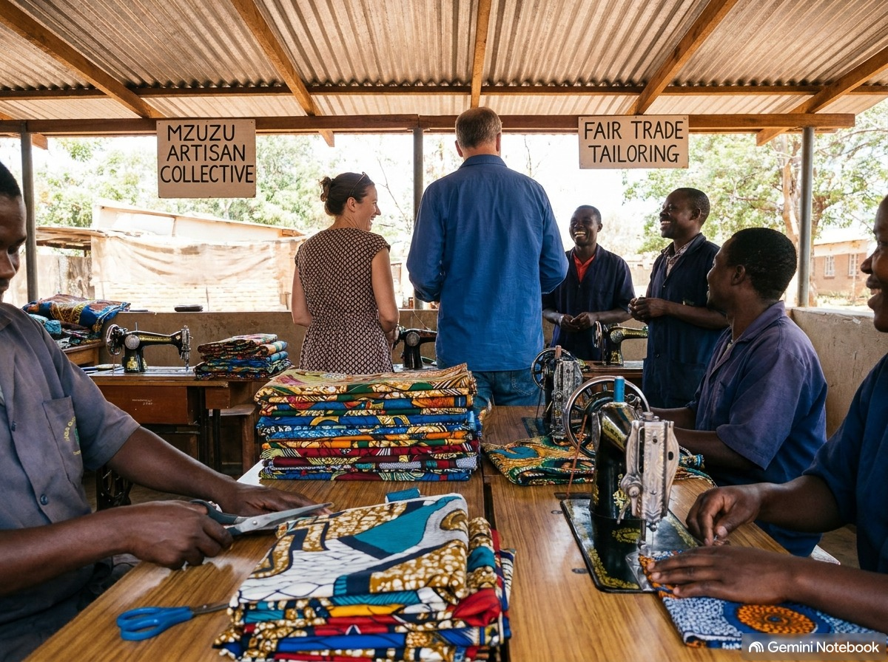
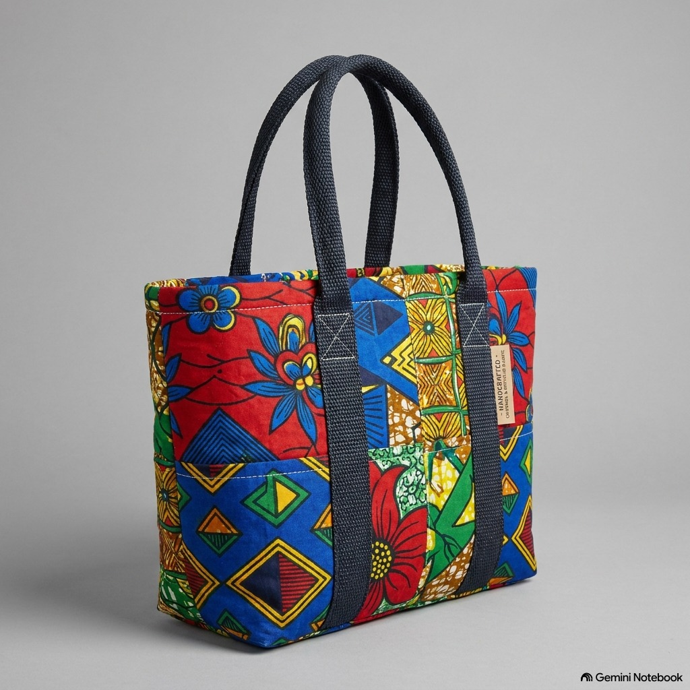
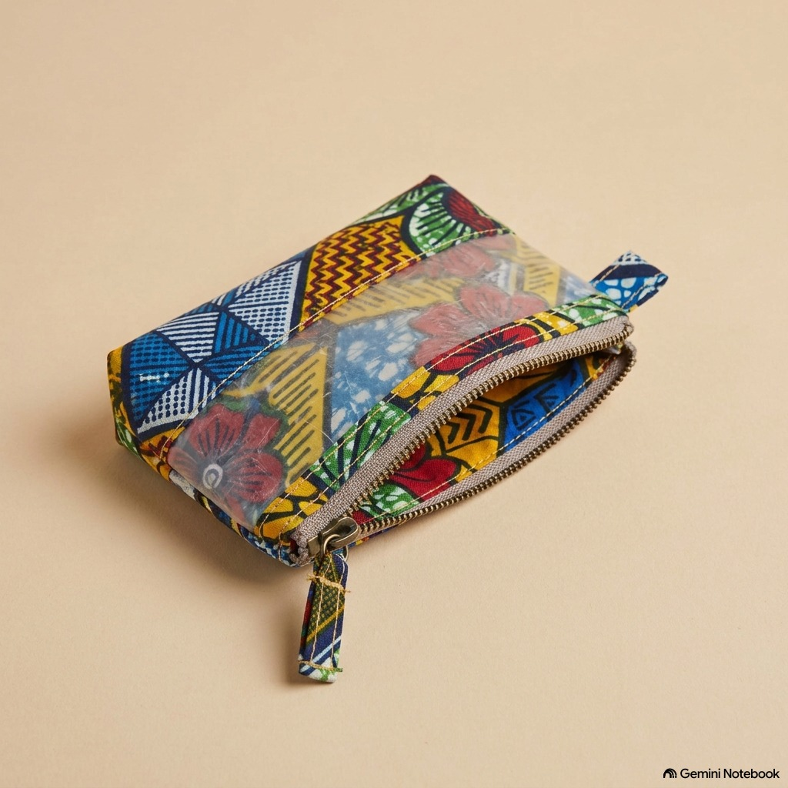
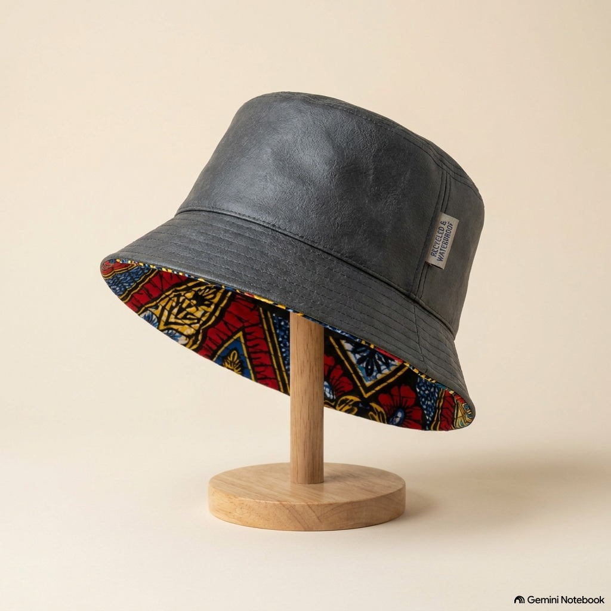

Transforming local plastic waste into handmade, vibrant products in Mzuzu, Malawi.
A community-facing social enterprise creating local jobs in Mzuzu.
&Proud is the customer-facing fashion brand of Clean & Proud, founded by Beatrice & George in Mzuzu. We collect plastic waste from streets and local businesses, converting environmental challenges into fair-wage economic opportunities for local artisans and tailors.
Every product empowers our local team with skills training, steady employment, and community outreach.

How discarded plastic bags become durable, stylish accessories.
Plastic waste is gathered from streets, markets, and local suppliers in Mzuzu.
Materials are thoroughly cleaned and dried by hand by our team.
Recycled plastic is fused and lined with traditional Chitenge patterned fabric.
Skilled local tailors stitch each bag, hat, or pouch into a unique product.
Handmade accessories crafted from recycled materials and African fabrics.

Durable daily tote bag lined with heat-sealed recycled plastic for waterproofing.

Compact, colourful coin purse crafted from repurposed fabric and plastic strips.

Stylish, weather-resistant hat designed for everyday outdoor wear.
Note: We do not offer online cart or direct sales on this website. For wholesale orders or product inquiries, please contact us below!